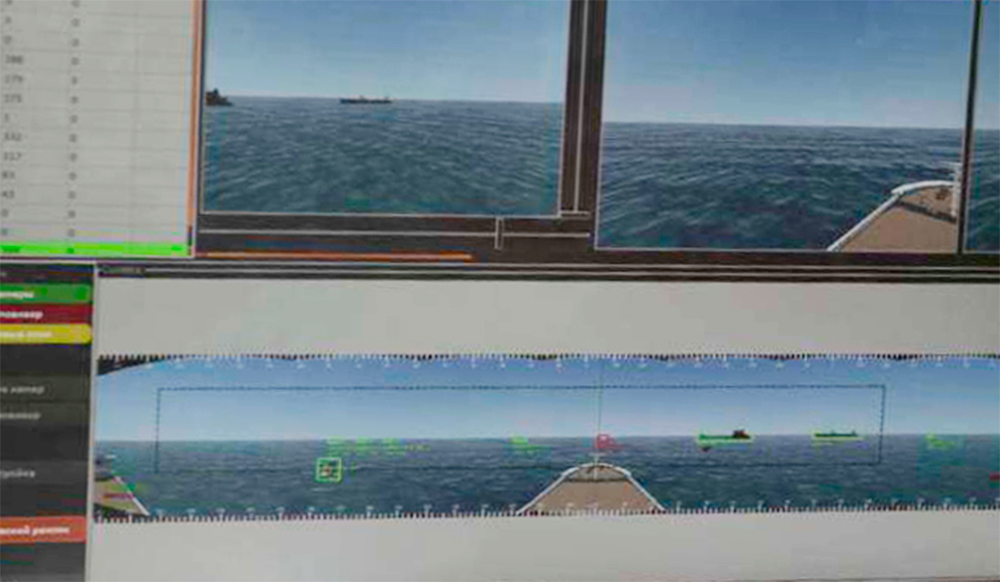
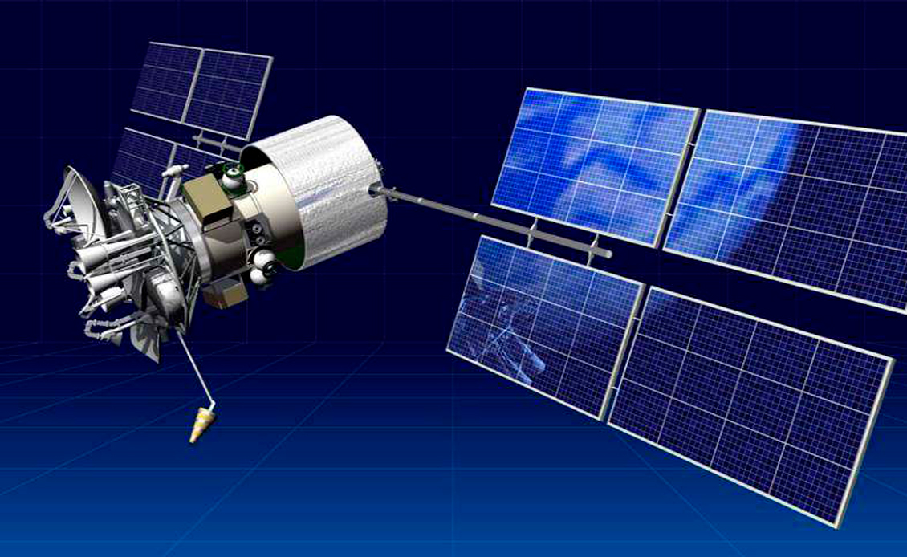

Технологии
- Функциональный подход
- Системная архитектура
- Автономная навигационная система
- Оптическая система анализа ситуационной обстановки
- Система координированного управления движением
- Расширение систем управления техническими средствами
- Пульт дистанционного управления
- Аппаратное обеспечение а-Нав
- Передача данных и кибербезопасность
- Мостиковый планшет
- Караванное управление
- Нормативное регулирование
Функциональный подход
Стратегическая цель нашего проекта – обеспечить широкое, массовое применение морских автономных судов (МАНС) потребителями.
Препятствием для этого сегодня служит отсутствие внятного подхода к тому, как должны функционировать МАНС среди традиционных, на чем должна основываться логика принятия решений их системами управления – страх, что автономные суда будут неконтролируемым и непредсказуемым новым фактором в исторически сложившейся и понятной всем практике судоходства. Это же является причиной и нерешенных вопросов нормативного регулирования, без которых невозможно регулярное применение новых технологий в морском транспорте.
Принцип полной функциональной эквивалентности является решением этой проблемы. Он подразумевает точное исполнение в автономном режиме тех функций, которые сейчас предписано исполнять экипажу на борту действующим регулированием.
Полная функциональная эквивалентность служит общим знаменателем для автономных и традиционных судов. С одной стороны, она гарантирует, что при взаимодействии с другими участниками судоходства МАНС будут руководствоваться и выполнять всем известные и обязательные функции – т.е. делает работу МАНС предсказуемой и понятной для всех. С другой стороны, она позволяет использовать новые технологии в рамках существующих международных конвенций, не требуя их немедленного изменения, а подстраиваясь под них на уровне национального регулирования.

Для реализации этого принципа в ходе проекта были выделены ключевые функции, предусмотренными СОЛАС-74, Кодексом ПДНВ и МППСС-72, а также другими документами. В отношении каждой из них были оцененывозможность, ограничения и целесообразность автоматическогои дистанционного управления.
При этом, мы не ставим задачу получить сегодня безэкипажное судно – т.е. судно, где вообще нет места для человека на борту. Аналогично проекту MUNIN, мы исходим из того, что для различных задач в тех или иных условиях должны использоваться наиболее адекватные способы управления: например, полностью автоматический в открытом море, дистанционный в нештатных ситуациях, человеком на борту – в экстремально сложных или аварийных ситуациях.
В отношении каждой из автоматизируемых функций действует простое правило: они должны выполняться в не меньшем объеме, чем выполняются сейчас экипажем на борту.
Системная архитектура
Основываясь на описанном выше функциональном подходе и результатах проекта MUNIN, разработана следующая системная архитектура. Она включает в себя как традиционные системы (навигационные приборы, технические средства судна, в т.ч. исполнительные, сигнальное и радиокоммуникационное оборудование), традиционные средства автоматизации (системы управления двигателем и техническими средствами,системы следования по маршруту) и новые системы: Автономную навигационную систему (АНС), Оптическую систему анализа ситуационной обстановки (ОСА) – включая обзорно-поисковую систему и подсистему внутреннего наблюдения - Пульт дистанционного управления (ПДУ) и мостиковый планшет (интерфейс для взаимодействия с системами а-Навигации на борту судна, который также может служить и системой поддержки принятия решений при ручном управлении).
Автономная
навигационная система
АНС предназначена для выполнения функций по автоматическому анализу окружающей обстановки, переходу судна по заданному маршруту в автоматическом режиме и режиме дистанционного управления, и автоматическому принятию решений по маневрированию судна с учетом параметров судна и положений МППСС-72. АНС включает подсистему обработки навигационной информации (ПОИ), подсистему автоматического маневрирвоания и расхождения (ПАМИР), и Клиент АНС (представляющий расширенную функциональность ЭКC).
ПОИ в режиме реального времени получает и автоматически интегрирует данные от всех доступных источников информации (РЛС, АИС, глобальные системы спутниковой навигации и позиционирования, метеостанция и др., включая ОПС) о целевой обстановке, собственном судне и состоянии систем управления движением. Аналогичным образом сейчас собирает и интегрирует данные на борту человек с помощью своего зрения и интеллекта. Полученные и интегрированные данные передаются в режиме реального времени в ПАМИР и Клиент АНС (в т.ч. в полном объеме для отображения на ПДУ), а также в СРД. Данные об идентифицированных целях ПОИ также передает в ОПС для учета и отображения последней.
ПАМИР в режиме реального времени осуществляет автоматическое построение маршрута движения судна в соответствии с рейсовым заданием (предварительной прокладкой), комплексный анализ (в т.ч. с учетом параметров собственного судна) и принятие решения по маневрированию в соответствии с МППСС-72 с использованием информации о целевой обстановке, собственном судне, состоянии энергетической установки, системе управления движением. Изменения маршрута передаются в Клиент АНС для отображения и, опционально, для подтверждения (при активации соответствующей опции режима автоматического управления). Команды на подачу звуковых сигналов, сигнальных огней и знаков передаются для исполнения на системы управления сигнализациями на судне и для отображения в Клиент АНС.
ПАМИР обеспечивает непрерывный автоматический контроль безопасности от посадки на мель, столкновения (навала) с навигационными опасностями, которые могут быть вызваны навигационными ошибками. Это включает в себя заблаговременные действия для предотвращения от столкновения с навигационной опасностью (входа в район, имеющий особый режим плавания), генерированию сигнала о приближении судна к навигационной опасности (опасной изобате) или к району с особыми условиями плавания. Для решения данной задачи ПАМИР непрерывно оценивает положение судна относительно навигационных опасностей (районов с особым режимом плавания). Для разработки алгоритмов ПАМИР в рамках группой экспертов впервые были однозначно определены и четко алгоритмизированы положения МППСС-72, что позволит сделать управление МАНС 100% предсказуемым, даже в сравнении с традиционными судами, управляемыми человеком.
Клиент АНС отображает в режиме реального времени информацию о навигационной обстановке, собственном судне и состоянии систем управления движением, а также рассчитанные ПАМИР маршруты движения и маневры в представлении аналогичном ЭКС, где соответствующая информация формируется в виде дополнительных слоев с возможностью выбора/переключения между ними. Также Клиент АНС позволяет осуществлять прокладку маршрута рейса оператором ПДУ или с использованием МП. Клиент АНС является ключевым инструментом для того, чтобы ответственный персонал в центре дистанционного управления или на борту судна своевременно получал уведомление или предупреждение о ситуации и планируемых решениях АНС. Опция подтверждения маневра в режиме автоматического управления также позволяет с помощью Клиента АНС осуществлять согласование автоматически рассчитанного маневра оператором ПДУ или человеком на борту судна. Клиент АНС устанавливается на ПДУ и МП на борту судна.
Оптическая система
анализа ситуационной обстановки
ОСА предназначена для оптической (визуальной) оценки окружающей обстановки (обзорно-поисковая система, ОПС) и состояния судна (подсистема внутреннего наблюдения ПВН). Это искусственные глаза, наблюдающие непрерывно, без усталости и потери внимания, в темноте и сразу на 360 градусов вокруг судна.
ОПС предназначена для автоматического обнаружения и распознавания окружающих объектов, передачи информации о найденных объектах в машиночитаемом виде в ПОИ АНС, а обработанного видеоизображения на мостиковый планшет и ПДУ. Также ОПС записывает необработанные видеоданные всех видеокамер в СРД на борту судна. Таким образом выполняются конвенционные требования о постоянном визуальном наблюдении - не только в дистанционном, но и в автоматическом режиме управления. Безусловно, для автоматического режима управления требуется длительное обучение нейросети ОПС, в самом начале которого мы сейчас находимся - но мы считаем, что такой подход, с приоритетом автоматического распознавания, является наиболее перспективным. В частности, так мы действительно устраняем человеческий фактор в наблюдении и анализе, а не просто переносим его с борта судна в центр дистенционного управления.
ОПС также осуществляет передачу видеоданных на ПДУ. В зависимости от пропускной способности канала связи ОПС позволяет в автоматизированном режиме оптимизировать объем передаваемых данных за счет контролируемого снижения качества видеоизображения. Учитывая, что распознавание объектов зависит от индивидуальных свойств человека, клиент ОПС содержит конфигуратор, который позволяет изменять качество и разрешение передаваемого изображения – в зависимости от индивидуальных особенностей восприятия оператора ПДУ. Как отдельную = опцию ОПС предусматривает возможность построения виртуальных моделей вместо обычного видеоизображения, когда объединение сенсорных данных в виртуальной модели может обеспечить эквивалентную ситуационную осведомленность для оператора по сравнению с передаваемым реальным изображением.
ПВН предназначена для оптического (визуального) контроля и наблюдения за состоянием помещений, оборудования и грузов на судне. Передача оповещений и видеоинформации осуществляется ПВН в автоматическом и ручном режимах. В автоматическом режиме при возникновении заданной ситуации создается сигнал и пользователю на экран монитора автоматически выводится информация о событии и демонстрируется видео с соответствующей камеры, или данные датчиков (сенсоров). В ручном режиме пользователь имеет возможность произвольно выбрать видеокамеры для просмотра информации.
Система
координированного управления движением
СКУ предназначена для управления упорами с помощью средств активного управления движением и пассивных рулей направления на основе команд, заданных АНС. В общем случае СКУ обеспечивает автоматическое удержание судна на заданном АНС курсе и относится к традиционным, хотя и пока еще мало распространенным системам управления курсом/траекторией движения судна. В силу этого в качестве СКУ в составе комплекса а-Навигации могут использоваться любые существующие на рынке системы управления курсом/траекторией движения судна.
Команды управления поступают на вычислительный прибор СКУ от АНС, обрабатываются c учетом математической модели конкретного судна и преобразуется в команды управления на конкретные исполнительные механизмы средств управления движением, которые отправляются через прибор сопряжения с бортовыми средствами дистанционного автоматизированного управления (ДАУ).
Расширение систем
управления техническими средствами
Р-СУТС относится к существующей функциональности традиционных систем управления техническими средствами судна (СУТС). В силу этого, как и в случае с СКУ, в качестве Р-СУТС в составе комплекса а-Навигации могут использоваться любые существующие на рынке СУТС с возможностью дистанционного выполнения своих задач. Ключевой задачей Р-СУТС является передача и отображение информации от штатной СУТС на ПДУ.
Р-СУТС обеспечивает:
- контроль состояния технических средств судна с автоматической выработкой сигналов и рекомендаций по действиям в предусмотренных ситуациях;
- передачу в АНС и СКУ статуса работы движительных и рулевых устройств (опционально, при отсутствии прямого подключения у этих систем);
- квитирование и просмотр истории событий;
- передачу инструкций по эксплуатации технических средств судна.
Передача информации на ПДУ осуществляется Р-СУТС в автоматическом и ручном режимах. В автоматическом режиме на ПДУ выводится информация о любых нештатных ситуациях, обнаруженных Р-СУТС в судовых системах. При возникновении нештатной ситуации подается сигнал и автоматически выводится сообщение соответствующей судовой системы с указанием параметров, отклоняющихся от номинальных значений. В зависимости от согласованной функциональности Р-СУТС, персоналу могут автоматически выдаваться инструкции по действию в нештатных ситуациях.
Вместе с ПВН, Р-СУТС позволяет выполнять функции обхода и проверки помещений, груза и технических средств судна без непосредственного присутствия человека. Сегодня суда, оснащенные СУТС и имеющие соответствующий класс автоматизации, уже не требуют постоянного присутствия человека в машинном отделении - задачей а-Нав является следующий шаг: отсутствие необходмиости постоянного присутвия человека на мостике для управления судном.
Пульт дистанционного управления
ПДУ является рабочим местом оператора дистанционного управления и предназначен для решения всего комплекса задач дистанционного контроля и управления включает в себя интерфейсы взаимодействия оператора с АНС, ОСА, Р-СУТС, судовыми средствами связи, а также джойстиковую систему и локальную СРД. ПДУ размещается за пределами управляемого судна и является эквивалентом рулевой рубки и центрального поста управления.
В основной зоне ПДУ в непосредственной доступности для оператора находятся три многофункциональных сенсорных экрана для взаимодействия со всеми перечисленными системами, а также джойстиковая система, видеокамера, терминалы для взаимодействия с судовыми средствами свзяи, включая видеосвязь с экипажем на борту.
В зоне отображения видеоинформации об окружающей обстановке над основной зоной располагаются пять экранов, отображающие видеоинформацию, получаемую из ОПС – по умолчанию с углом обзора 180° перед судном с возможностью произвольного поворота сектора обзора оператором с помощью интерфейса ОПС для обзора по дуге 360° в горизонтальной плоскости. Данное расположение обеспечивает реальные угловые размеры объектов на получаемом видеоизображении. На экранах зоны отображения видеоинформации представляется сшитое ОПС видеоизображение с дополнительной индикацией информации об обнаруженных целях, абсолютном и относительном курсе собственного судна, пеленге окружающих объектов, а также индикаторами доступности систем а-Навигации, доступности канала передачи данных, активированном режиме управления судном и (при включении) сигнале о необходимости перехода на ручное управление из-за возникновения условий ограничений применения автоматического режима.
Джойстиковая система для передачи оператором параметров движения судна в дистанционном режиме управления включает в себя панель управления и аналоговый 3-х координатный джойстик, который обеспечивает задание продольной силы, боковой силы и разворачивающего момента. Использование джойстика позволяет с помощью одного органа управления управлять сразу всеми необходимыми средствами активного управления. Панель управления ДС включает переключатель режимов управления между автоматическим и дистанционным режимами управления МАНС.
В целях обеспечения взаимодействия оператора ПДУ с радиооборудованием на судне (УКВ и ПВ-КВ радиостанции, ПВ-КВ радиотелекс, станция Инмарсат, приемник Navtex и громкая связь) на ПДУ применяются либо отдельные терминалы, связанные с соответствующием оборудованием на судне, либо единый многоканальный пульт управления с единым устройством сопряжения с оборудованием на борту.
Аппаратное обеспечение а-Нав
Комплекс а-Навигации требует ряда дополнительного оборудования на борту МАНС: единый бортовой вычислительный (серверный) комплекс, набор видеокамер (в т.ч. тепловизионных) и системы передачи данных на базе конвенционного оборудования. Поскольку технические решения а-Нав разрабатываются для применения на любых судах, в т.ч. и существующих, где не предусмотрены специальные помещения для серверного оборудования, бортовой серверный комплекс может быть выполнен в нескольких вариантах. Это либо размещение в закрытых помещениях, либо в климатическом контейнере на борту судна, либо непосредственно на палубе судна.
В целях обеспечения катастрофоустойчивости обеспечивается дублирование, когда у каждого сервера есть резервная копия на другом сервере для оперативного восстановления в случае аппаратных сбоев первого. Также в качестве рекомендуемой конфигурации – там, где это позволяет конструкция судна – сервера распределяются в два физически независимых коммутационных шкафа, каждый из которых обеспечивается источниками бесперебойного питания с емкостью, достаточной для работы серверов шкафа до запуска резервного генератора судна.
Отказоустойчивость ОСА обеспечивается взаимным перкрытием секторов обзора камер. Цифровые стабилизация и коррекция компенсируют возможные смещения камер в результате механических воздействий.
Передача данных и кибербезопасность
Все системы а-Нав на борту судна и ПДУ объединены в защищенную локальную сеть, доступ к которой контролируется с использованием шифрования данных, брандмауэра для защиты периметра, контроля и ограничение сокетов.
Обмен данными между бортовым сегментом и ПДУ осуществляется с помощью беспроводной связи, на основе которого строится VPN-туннель. В зависимости от условий эксплуатации МАНС средства связи могут включать средства:
- спутниковой связи (в любых акваториях): VSAT, Inmarsat, Iridium и т.п.;
- мобильной связи (в зоне покрытия сетей мобильной связи): GPRS, CDMA, 3G, 4G LTE;
- прямой СВЧ-радиосвязи (в зоне прямой видимости между ПДУ и управляемым МАНС, например, при караванном управлении).
Канал передачи данных резервирован для обеспечения его непрерывной доступности.
Канал передачи данных между бортовыми системами и ПДУ защищен от несанкционирвоанного доступа средствами шифрования (в соответствии с ISO/IEC 27005:2018 и МАКО Rec. No. 166 - Recommendation on Cyber Resilience). Обеспечение кибербезопасности берегового центра дистанционного управления обеспечивается в соответствии с политиками информационной безопасности судоходной компании (рекомендованы к использованию BS 7799-1: 2005, ISO / IEC 17799: 2005, ISO / IEC 27001 and ISO / IEC 27002).
Обеспечение безопасности подключения к информационной сети комплекса а-Навигации (в т.ч. со стороны разработчика для выявления и устранения возможных дефектов) осуществляется следующими способами:
- организация VPN туннеля с помощью протокола L2TP + IPsec с шифрованием AES-256;
- ограничение доступа по внешнему IP из листа разрешенных соединений;
- ограничением подключения из сети Интернет: подключение инициируется с МАНС, прямое подключение из сети интернет невозможно, входящие порты закрыты;
- подключением разработчика к ПДУ, а не напрямую к системам на борту МАНС (тем самым также уменьшается нагрузка на канал передачи данных до судна и повышается безопасность непрямой работы в серверной части);
- использованием единой точки подключений, которой является маршрутизатор: подключение производится по туннелю, построенному по технологии OpenVpn с использованием сертификатов (для каждой организации-контрагента используется уникальный сертификат, защищенный паролем) и пары логин/пароль для каждого сотрудника, шифрование производится по алгоритму AES-256.
- использованием своей уникальной адресации на каждом судне/ПДУ, не пересекающейся друг с другом (разделение сетей).
Защита LAN обеспечивается следующими способами:
- Внутри локальной сети на всех устройствах отключен выход в интернет, заблокирован на уровне маршрутизатора;
- В операционных системах Windows и Linux созданы пользовательские учетные записи и присвоен пароль;
- В операционных системах Windows и Linux включен брандмауэр и файрвол, весь трафик заблокирован на вход/выход кроме служебного и устанавливаемого ПО. Включен встроенный антивирус;
- В сетевых устройствах, имеющих веб-интерфейс, изменены стандартные пароли производителя;
- Агенты системы мониторинга подключаются с учетной записью, имеющей минимально необходимые права на сервере;
- Отключены незадействованные usb порты на серверах в bios;
- Отключены незадействованные порты ethernet;
- Установлены пароли на bios;
- На сетевом хранилище NAS, активированы правила временной блокировки доступа при вводе неправильного ввода пароля, настроен «белый» список ip адресов для устройств, имеющих доступ;
- В видеокамерах настроен «белый» список ip адресов, создана учетная запись с минимально необходимым набором прав для подключения к сетевому хранилищу, отключены неиспользуемые сетевые сервисы мониторинга, отключен доступ по ssh.
Для самодиагностики систем комплекса а-Нав, получения информации о недоступности и неисправностях всех элементов, включенных в LAN, в том числе канала обмена данными между бортовыми системами и ПДУ, используется Подсистема конфигурации и мониторинга. В качестве ее программного обеспечения могут использоваться существующие на рынке системы мониторинга компьютерных сетей и оборудования, такие как Zabbix, Checkmk, HPE Openview и др.
Мостиковый планшет
Мостиковый планшет служит для отображения информации экипажу на борту аналогично ПДУ и видеосвязи персонала на борту с оператором ПДУ, и представляет собой два экрана в морском исполнении, подключаемые к локальной сети а-Нав.
Он может выступать также для улучшения ситуационной осведомленности и как система поддержки принятия решений при ручном (традиционном) управлении судном.
Караванное управление
В рамках проекта "БЭС-КФ" тестируется и вариант караванного управления: когда ПДУ устанавливается не на берегу, а на головном судне конвоя судов, и контролирует движение других судов в составе каравана.
Испытания проводятся на дноуглубительном карвавне Росморпорта, где имитируется ситуация: головное судно-земснаряд с ПДУ и экипажем на борту и грунтоотвозные баржи, присутствие экипажа на которых не требуется (или существенно сокращено). Баржи движутся по заданному маршруту в автоматическом режиме, по команде оператора подходят к земснаряду или выгружаются в противоположной точке маршрута. Экипаж с земснаряда поднимается на борт баржи только для технического обслуживания и аварийных ситуаций.
Это весьма уникальный опыт, перспективы которого потенциально могут быть использованы и в других сегментах морского транспорта. Например, ледовые конвои, когда в качестве головного судна с экипажем выступает ледокол, за которым следует МАНС под управлением ледокола. Или транспортный караван, объединяющий несколько кораблей, из которых только на одном есть экипаж.
Нормативное регулирование
Нормативное регулирование является ключевым условием широкого МАНС. Поэтому этой задаче уделялось значительное внимание с самого начала реализации проекта "БЭС-КФ". С учетом принципа полной функциональной эквивалентности была разработана нормативная база, которая в настоящее время внедряется правительством России как национальной морской администрацией и администрацией Государственного флага.
Чтобы соответствовать действующим международным нормам, мы ориентируемся в первую очередь на автономные суда с людьми на борту, даже если они не управляют судном - мы называем такие суда полуавтономными. В то же время мы закладываем правовую основу и для полностью беспилотных автономных судов в будуем.
Нормативное регулирование МАНС в России, обеспечивающие их широкую эксплуатацию в рамках действующего международного регулирования, включает три уровня: - Федеральный закон «О внесении изменений в Кодекс торгового мореплавания Российской Федерации и отдельные законодательные акты Российской Федерации в части правоотношений, возникающих при использовании автономных судов». Он внедряет понятийный аппарат и принципиальные положения в национальное законодательство на уровне Кодекса торгового мореплавания и отдельных федеральных законов;
- Постановление правительства «О проведении эксперимента по опытной эксплуатации автономных судов под Государственным флагом Российской Федерации в период с 2021 по 2025 годы». Оно регламентирует регулирование эксплуатации МАНС под российским флагом на «переходный» период до 2025 г. и определяет требования администрации флага РФ к организации такой эксплуатации с учетом IMO Interim Guidelines For Mass Trials;
- Детальное регулирование процедур и средств автономного судовождения: Положения по классификации МАНС Российского морского регистра судоходства и Правила применения МППСС-72 в системах автоматического управления (последние алгоритмизируют в однозначным и детерминированным образом положения МППС-72), а также иные подзаконные акты.
Детальная информация об этих изменениях была заблаговременно представлена IMO в официальных нотах Российской Федерации от 11 февраля 2020 (MSC 102/5/14), также как и информация о реализации проекта "БЭС-КФ"(MSC 102/5/29).